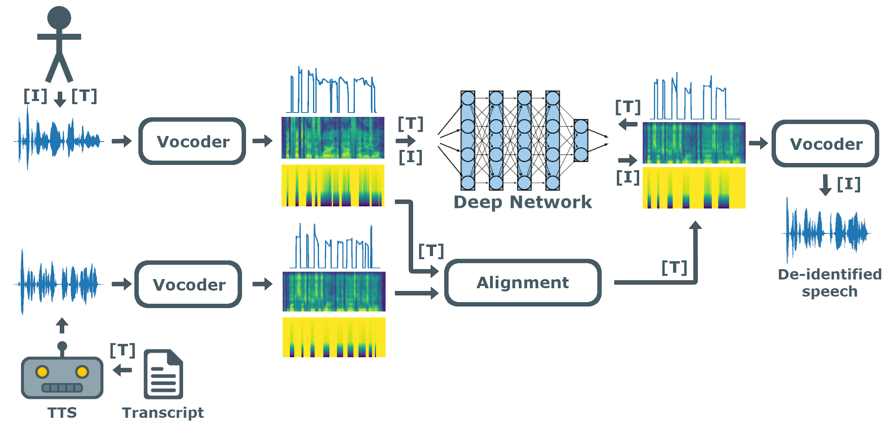
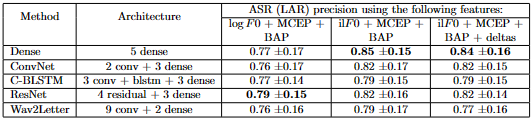
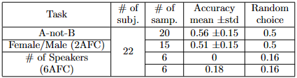
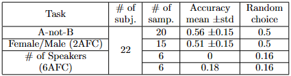

Speech de-identification with deep neural networks
Abstract
Cloud-based speech services are powerful practical tools but the privacy of the speakers raises important legal concerns when exposed to the Internet.
We propose a deep neural network solution that removes personal characteristics from human speech by converting it to the voice of a Text-to-Speech (TTS) system before sending the utterance to the cloud. The network learns to transcode sequences of vocoder parameters, delta and delta-delta features of human speech to those of the TTS engine.
We evaluated several TTS systems, vocoders and audio alignment techniques. We measured the per- formance of our method by (i) comparing the result of speech recognition on the de-identified utterances with the original texts, (ii) computing the Mel-Cepstral Distortion of the aligned TTS and the transcoded sequences, and (iii) questioning human participants in A-not-B, 2AFC and 6AFC (Alternative Forced-Choice) tasks. Our approach achieves the level required by diverse applications.
Task and motivation
Cloud-based speech services have improved recently due to the large amount of voice data that is exploited by deep learning technology, giving rise to superhuman performance in several tasks. Consequently, it seems reasonable to use such utilities in practice.
Unfortunately, many speech applications involve legal concerns regarding privacy. Several methods have been proposed to eliminate personal information from samples without spoiling the linguistic content before uploading. We should also mention, that in many cases the private information is carried by the linguistic content and not by the voice of the speaker. For example, when a doctor dictates medical records, the private content is the medical content and not the identity of the doctor. But in the case of diagnostic sessions with autistic people, it is the speaker whose identity should remain hidden. If an external ASR is used on the transformed speech of a patient, the identity will remain concealed, and the linguistic content can be generated safely.
Voice conversion (VC) operates by altering certain features of human speech. Voice transformation (VT) converts the signal as if it was uttered by a target speaker. De-identification is the process that intends to remove any personal information from the data that could be associated with identity. VC and VT may be applied to solve de-identification.
Proposed method
For de-identification, we propose to transform utterances to a generic voice of a Text-to-Speech (TTS) engine, by taking advantage of utterance-text sample pairs. We use an end-to-end trainable Deep Neural Network (DNN) to learn the many-to-one VT task. We suggest to learn the mapping at vocoder level.
Vocoders are speech analysis and synthesis tools. With their help we can encode the raw waveform to a more compressed representation that takes the human auditory system into consideration. This is why the resulted features are generally better to work with. We used the WORLD vocoder in our experiments.
Results
We show that the trained network gives rise to tolerable distortions at utterance level by conducting two experiments: comparing the outputs of Google’s Automatic Speech Recognition (ASR) system for the original TTS output and the de-identified utterance and measuring the Mel-Cepstral Distortion (MCD).
To confirm de-identification success, we further performed three kind of perceptual listening studies with human subjects (A-not-B test: distinguishing transformed utterances of different speakers, 2-Alternative Forced-Choice (2AFC) test: classifying utterances from female/male speakers, and 6-Alternative Forced-Choice (6AFC) test: estimating the number of speakers). Our proposal is irreversible and it requires only speech-transcript sample pairs for training, which are readily accessible in the literature.
 

Our technique enables privacy-aware speech recognition. The proposed method is lightweight and can be used for collecting de-identified databases when the privacy of the user is important, for example in cloud-based speech services or in medical records. The fact that our method requires only speech- transcript sample pairs is a very promising aspect for deep learning, which requires large and high quality databases.
BibTex
@article{fodor2021deidentification,
author={Fodor, Ádám and Kopácsi, László and Milacski, Zoltán Ádám and Lőrincz, András},
title={Speech De-identification with Deep Neural Networks},
journal={Acta Cybernetica},
volume={25},
number={2},
pages={257-269},
year={2021},
DOI={10.14232/actacyb.288282},
url={https://cyber.bibl.u-szeged.hu/index.php/actcybern/article/view/4178}
}